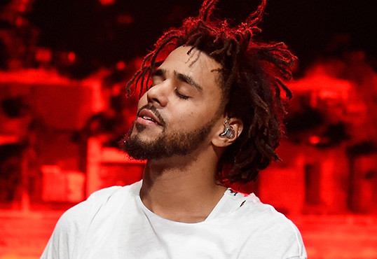

- Home
- Images
The Game Changer

j.cole
LIFE JOURNEY
-
1985 Jermaine Lamar Cole (J.Cole).
- 1991 Cole's Father turned his back on his family and moved to the US, North Carolina.
- 1995 He is exposed to basketball and music
- 2003 He graduates from high school
-
2004 He meets Melissa who he later dates during the year
- 2006 Graduates from college(degree in business and communication)
-
2007 Marries Melissa, his college sweetheart
During Music
-J.Cole performing
2007 Cole spent almost 5 months sleeping at the door steps of Roc Nation
2009 released second mix-tape called "The Warm Up", received positive reviews
2010 Cole was chosen as one of Beyond Race magazine's "50 Great Breakthrough Artists," he ranked 49,
resulting in the cover story of the publication's #11 issue, as well as a Q&A for the magazine's site.
He was also featured in XXL Magazine's 2010 version of the Top Ten Freshmen
In 1991 Cole's Father turned his back on his family and moved to the US,
North Carolina.
2010, Cole was awarded the UMA Male Artist of the Year thanks to his heralded The Warm Up mix-tape and
a high-profile deal with JayZ's label Roc Nation at the 2010 Underground Music Award.
2011 "HiiiPoWeR", a song Cole produced for Kendrick Lamar's Section.80 (2011) was released.
The single was the first of many collaborations to come from the two iconic legends in the making.
2012 He released a project called sidelined story, It then debuted at number 1 at billboard music chart
2013 Born Sinner and 2014's 2014 Forest Hills Drive, received mostly positive reviews from critics,
and both were certified to have reached double platinum in the United States. The latter earned him his first
Grammy Award nomination for best rap album
CAN NEVER BE BETTER TILL' YOU LOVE YOURS